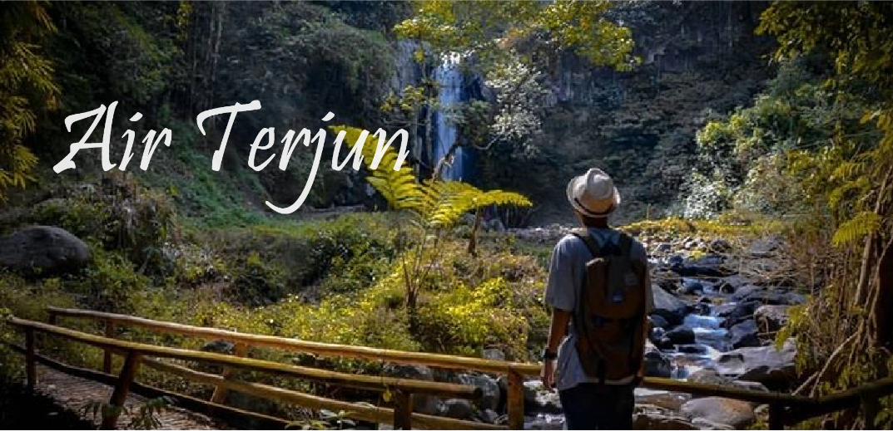
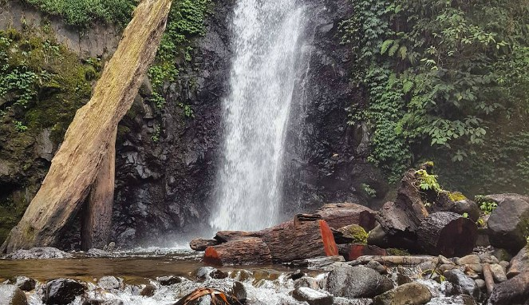
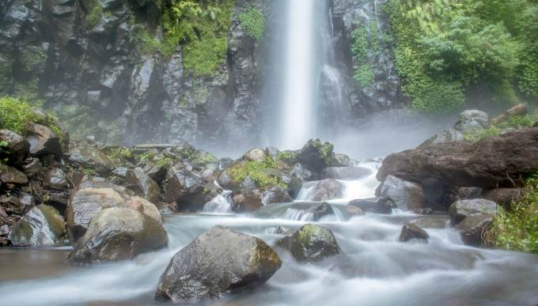

Air Terjun Rayap
Air Terjun Rayap terletak di Dusun Rayap, Desa Kemuning Lor,Arjasa. Banyak hal menarik yang bisa didapatkan pengunjung di sini. Lantas seperti apa tepatnya?
[ READ MORE ] ... .

Air Terjun Tancak
Air air terjun yang indah untuk dikunjungi. Letaknya sekitar 15 km dari pusat Kabupaten Jember dan terkenal dengan nama Air Terjun Tancak
[ READ MORE ] ... .
